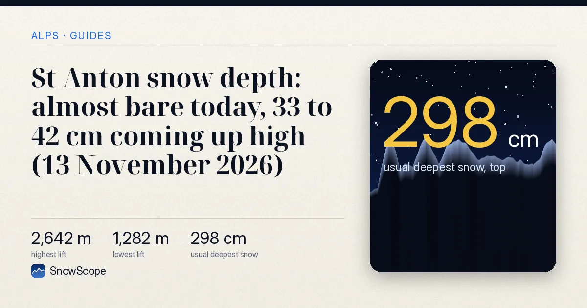
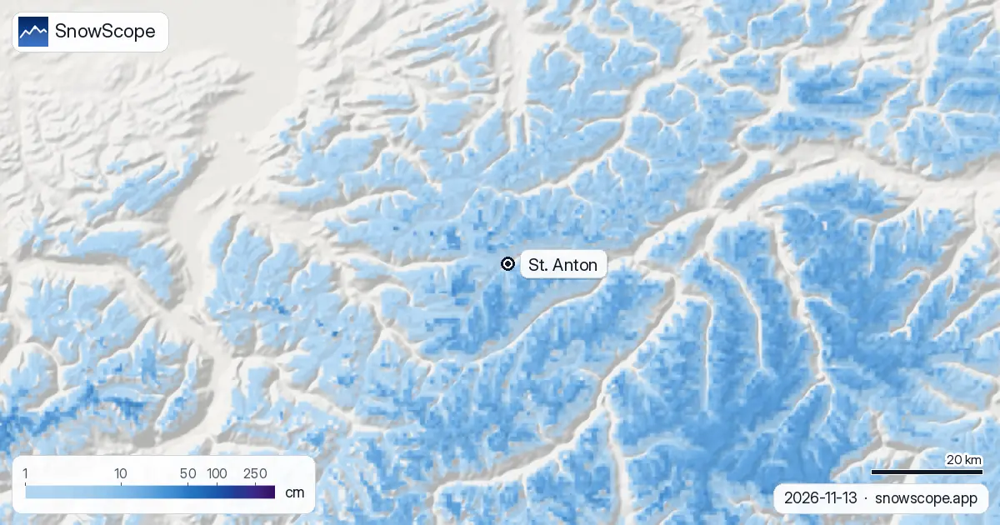
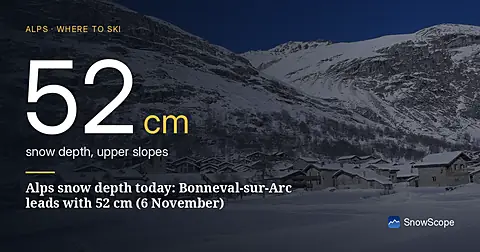
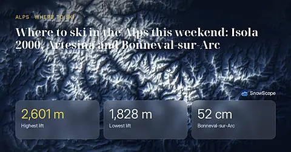

St Anton snow depth: almost bare today, 33 to 42 cm coming up high (13 November 2026)
St Anton's steep terrain demands snow depth to ski safely. Today the SnowScope map shows bare ground at the base, about 5 cm at mid-mountain (1962 m) and roughly 1 cm near the summit (2642 m). Within a week, the high slopes will gain 33 to 42 cm—a real shift, though the village will see mostly rain.
See the live snow forecast for St. Anton am Arlberg in the SnowScope appSnow depth, powder alerts and the 3D map, free.

Why so little snow is left up high
The past week brought 17 cm of new snow to the top, with 7 cm falling in just the last 24 hours. Yet only about 1 cm remains on the ground. The Arlberg's exposed ridges face constant wind and strong autumn sun, both of which strip away fresh snow quickly. Mid-mountain fares better at 5 cm because the bowls and gullies there offer shelter from the wind.
The base of St Anton remains dry. At 1282 m, November is typically the driest month of the season, and this year follows that pattern exactly.
What the next seven days will deliver
SnowScope forecasts 42 cm at the top, 33 cm at mid-mountain and 18 cm at the base by next week. The first 24 hours should bring about 5 cm up high. However, other forecasts we compare with range much wider—38 to 93 cm at the summit and 34 to 86 cm mid-mountain. Such a spread signals genuine uncertainty about storm size, so deeper snow is quite possible.
The snow line sits around 1480 m, just above the village. This means St Anton's lower slopes and streets will collect rain while the ski terrain above turns white. Carrying chains is wise for the pass road this week.

When mid-mountain reaches skiing depth
Steep slopes and off-piste terrain need far more snow than groomed pistes. A practical threshold is 50 cm at mid-mountain. Looking at 46 past winters (1980–81 to 2025–26), St Anton held that depth for 17 weeks in 9 of 10 winters at mid-mountain, and for 24 weeks at the top.
November typically offers only 22 cm at mid-mountain—too thin for demanding terrain. December climbs to 62 cm, and January to 101 cm. This means mid-mountain usually crosses the 50 cm mark sometime in December, not before.
How this season compares with the long average
A typical winter peaks at 194 cm at mid-mountain and 298 cm at the top. Those figures have shifted downward over time. Mid-mountain peaked at a median of 218 cm in the first 15 winters of our record but only 178 cm in the last 15. The base showed a steeper drop, from 91 cm to 73 cm. Last winter ended at 159 cm and 238 cm respectively, below the long-term median.
The most reliable week for depth across the whole mountain is week 13 in late March. By then, mid-mountain typically holds 162 cm and the summit 238 cm. The ski terrain—St. Christoph, Stuben and St Anton combined—spans 99 km of runs served by 40 lifts.
What this means for your plans now
Early-season snow at this elevation is thin and easily damaged. Rocks and grass hide under shallow snow. Avoid steep terrain and off-piste runs until mid-mountain has accumulated closer to 50 cm, which typically arrives by mid-December.
Even gentle runs benefit from better snow coverage later in the season. If you are planning a trip in the next week, pack layers and expect variable conditions: winter from mid-mountain upward, autumn in the valley.
Tips for skiers
- Steep and off-piste skiing should wait until mid-mountain snow depth reaches about 50 cm, usually mid-December at St Anton.
- Before leaving the piste during this incoming storm, check the daily Tyrol avalanche bulletin at avalanche.report.
- Carry chains for the Arlberg pass road this week: rain will fall in the valley while snow falls higher up.
- Early-season snow on shallow ground often covers rocks and grass. Ski groomed runs and avoid terrain where the base shows through.
- Plan steeper descents and off-piste days for January onwards, when depth is reliably deeper across the mountain.
About these numbers
Resort snow depths are the deepest snow on the resort's upper slopes on the date shown; they are estimates for an area, not a measurement at one point. Forecasts can change. Always read the official avalanche bulletin before going off-piste.
Official avalanche bulletins: Avalanche.report – Euregio Tyrol
Cite this report
For research, teaching or the press: the numbers and charts are free to reuse under CC BY 4.0 with this citation.
SnowScope (2026), St Anton snow depth: almost bare today, 33 to 42 cm coming up high (13 November 2026), https://snowscope.app/blog/en/2026/11/st-anton-snow-depth-13-november-2026.html, accessed 2026-11-13
SnowScope (Atlas Labs). (2026, November 13). St Anton snow depth: almost bare today, 33 to 42 cm coming up high (13 November 2026). SnowScope snow reports. https://snowscope.app/blog/en/2026/11/st-anton-snow-depth-13-november-2026.html
BibTeX
@misc{snowscope2026stantonsnowdepth13novemb,
author = {{SnowScope (Atlas Labs)}},
title = {St Anton snow depth: almost bare today, 33 to 42 cm coming up high (13 November 2026)},
year = {2026},
month = nov,
howpublished = {\url{https://snowscope.app/blog/en/2026/11/st-anton-snow-depth-13-november-2026.html}},
note = {Published 2026-11-13 13:20 UTC; accessed 2026-11-13}
}· CC BY 4.0 · Methods, data and tools →
St. Anton am Arlberg: snow and temperature by height, this winter vs last (tools) →
Follow St. Anton am Arlberg
Free: a message when fresh snow is coming, and the forecast every morning.
More snow reports

Isola 2000 got 62 cm of new snow in the last 72 hours, 7 cm of it in the last 24 hours. It now has about 19 cm on its upper slopes, according to our …

Bonneval-sur-Arc (France) has the deepest snow in the Alps today, with about 52 cm on its upper slopes. La Grave follows with 52 cm, then Orelle with …

We combined today's snow depth, the new snow of the last 72 hours and the forecast to pick Isola 2000, Artesina and Bonneval-sur-Arc. Of these …